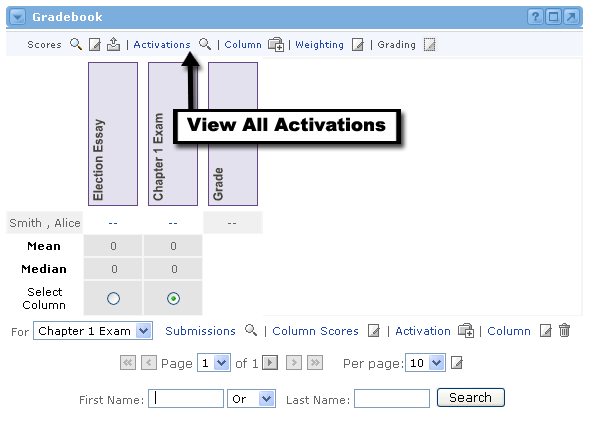
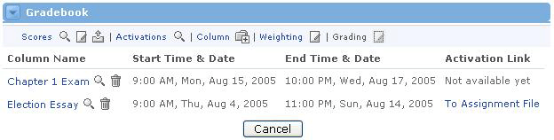

|
Submit Assignments and Feedback When an assignment becomes activated, a user within the offering can go to his or her Gradebook channel to download the assignment. The user should then complete and save the assignment to his or her local computer. Once finished, a user can send the file to the sponsor of the offering through the Gradebook channel. The sponsor, upon grading the assignment, may then choose to provide feedback to the user. This lesson shows the life cycle of an assignment as it travels from the user to the sponsor, and later returns to the user with the sponsor's feedback. |
Downloading the Assignment
 2. A list of currently active assignments appears.  |